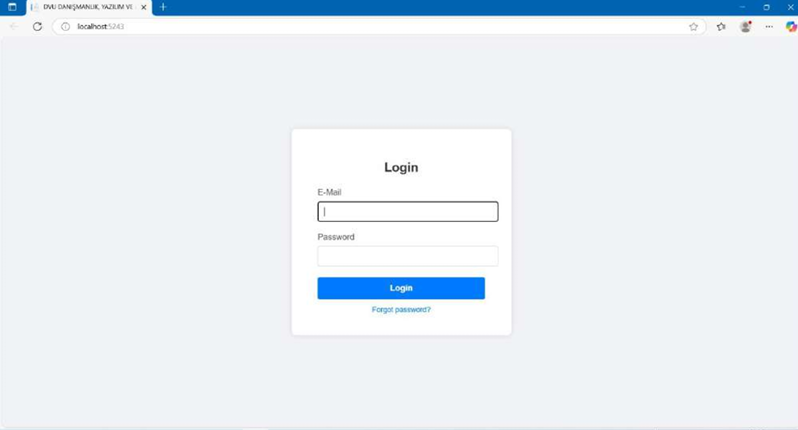
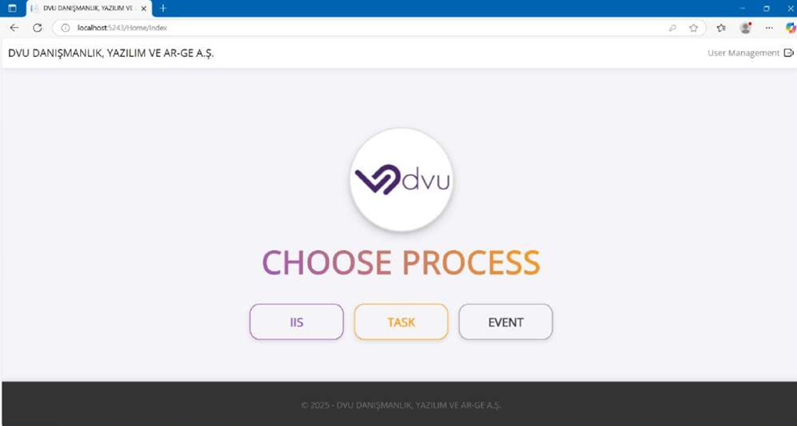
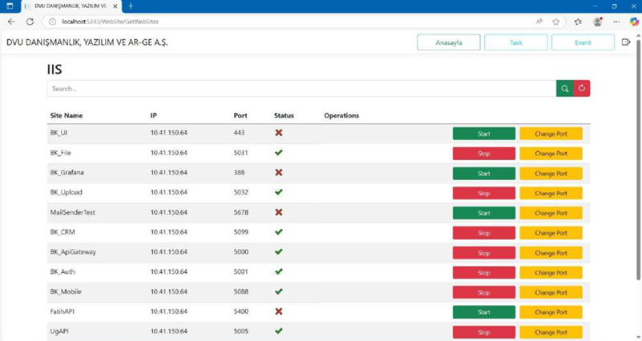
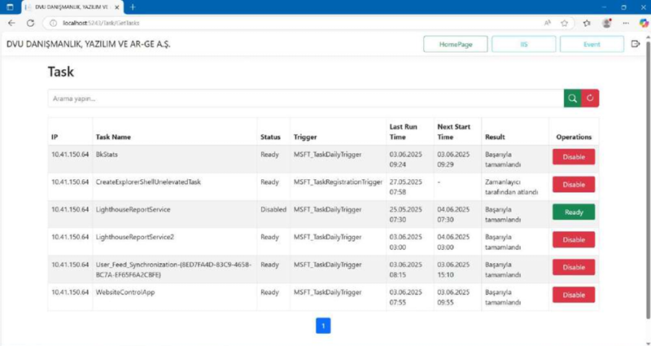
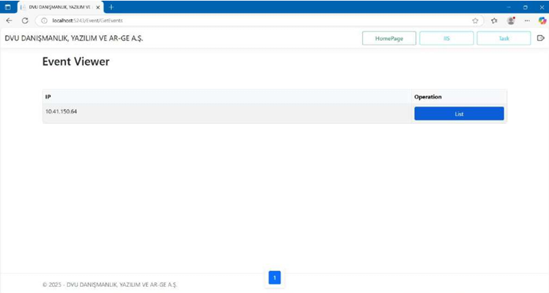
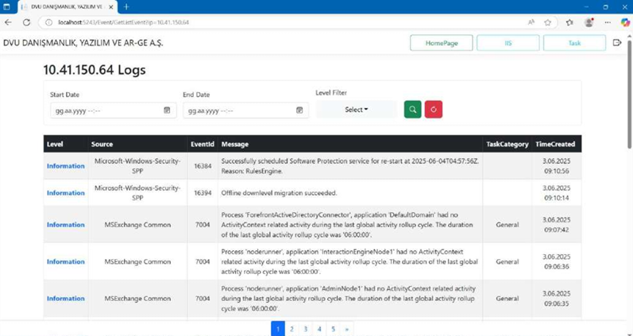

appsettings.json üzerinden tanımlanan uzak sunuculara güvenli PowerShell bağlantıları kurarak IIS web sitelerini, Task Scheduler görevlerini ve Event Viewer loglarını merkezi olarak listeleyen ve yöneten .NET 8 tabanlı bir sistem aracıdır.
Bu proje, kurumsal sunucu altyapılarının yönetimini kolaylaştırmak ve izlenebilirliği artırmak amacıyla geliştirilmiştir. Sistem, Clean Architecture (Katmanlı Mimari) prensiplerine uygun olarak Core (Business & Domain) ve Persistence (WebAPI & WebMVC) katmanlarından oluşmaktadır. Uygulama, arka planda güvenli PowerShell oturumları açarak uzak sunuculardaki IIS durumlarını çeker, görev zamanlayıcı mekanizmalarına müdahale eder ve Event Viewer üzerindeki kritik sistem loglarını gelişmiş filtreleme algoritmalarıyla arayüze taşır. Sistem, admin yetkilendirmesi, güvenli şifreleme ve token tabanlı şifre sıfırlama (şifremi unuttum) gibi kurumsal güvenlik modüllerini de bünyesinde barındırır.





